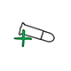
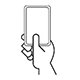
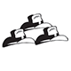

Bang! - Hráč, který je cílem, si ubere 1 život.
Vedle! - Ruší efekt Bang!
Doplň si 1 život - Hráč, který je cílem, si doplní 1 život.
Vezmi a dej si do ruky kartu - Pokud není určen cíl, vezmi kartu z dobíracího balíčku a dej si ji do ruky. Pokud je cílem nějaký hráč, vezmi kartu buď náhodně z jeho ruky nebo si vyber z karet vyložených před ním a dej si ji do ruky.
Vezmi a odhoď kartu - Vezmi kartu hráči který je cílem buď náhodně z jeho ruky nebo si vyber z karet vyložených před ním a odhoď ji do odhazovacího balíčku.
Efekt lze použít na jednoho libovolného hráče ve vzdálenosti 1 včetně sebe.
Efekt lze použít na jednoho libovolného hráče v dosažitelné vzdálenosti.
Efekt lze použít na jednoho libovolného hráče bez ohledu na vzdálenost včetně sebe.
Efekt je použit na všechny ostatní hráče kromě sebe bez ohledu na vzdálenost. Efekt je použit postupně, počínaje hráčem po tvé levici a dále po směru hodinových ručiček.
Pro použití efektu je potřeba odhodit s touto kartou ještě druhou kartu z ruky.